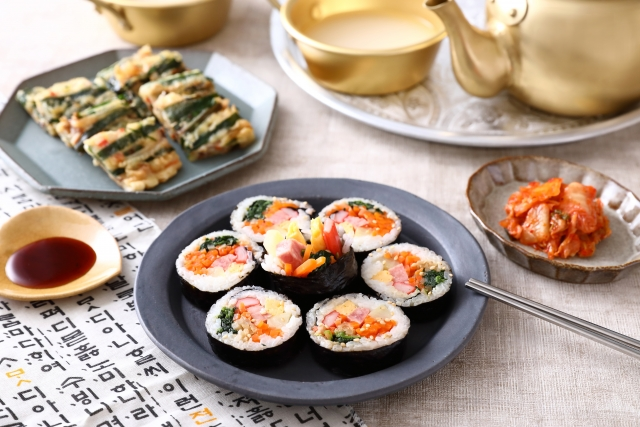
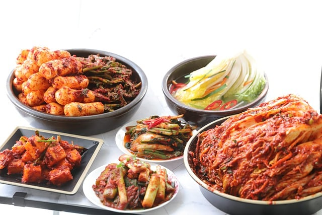
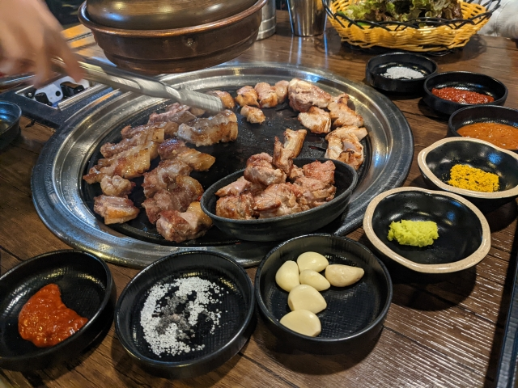
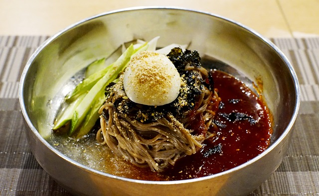

韓国料理
韓国料理とは？
韓国料理は今や韓流ブームもありお店に行かなくても自分の家で作れるくらいメジャーな料理もでてきました。 豚肉の焼肉である「サムギョプサル」や鶏肉と野菜の炒め物「タッカルビ」など美味しい料理がたくさんあります。
韓国料理の特徴として
- 菜食同源
- 五味五色
- 発酵文化
- ﾊﾟﾝﾁｬﾝ（おかず）があげられます。

韓国では昔から「菜食同源」が根付いています。食べ物と薬の根源は同じという意味です。 多くの天然の食物は薬であり、食べることで健康に繋がると考えられています。
また醤油、みそ、マッコリなど調味料からお酒まで発酵食品は多く存在します。
代表的な韓国の食卓には欠かせないキムチは100色以上あると言われています。 韓国人の肌がきれいと言われる事が多い理由は、発酵食品を日常的に口にしているからかもしれません。
韓国でご飯を食べに行くと頼んでもないおかずがたくさん出てくることがあります。
それが韓国語で”ﾊﾟﾝﾁｬﾝ”と言い基本的に無料でおかわりができます。

おすすめ韓国料理
サムギョプサル

サムギョプサルとはハングルで「삼겹쌀」と書き、サムは数字の「３」、ギョプは「層」、サルは「肉」を意味しています。
焼肉料理の一種で豚の三枚肉（ばら肉）を焼いたもので塩いりのごま油で食べたり、
にんにくやねぎとサンチュやえごまの葉で巻いて食べます。
冷麺

冷麺とはゆでて冷やしたそば粉を主原料としつなぎででんぷんを合わせた麺にゆで卵・キムチ・梨などをのせて
冷たいスープをかけたものです。 焼肉を食べた後や夏の食欲のないときに食べたりします。